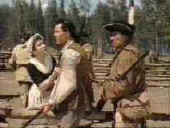
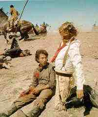

A Western is a Western is a Western
By Stuart J. Kobak
Surrounded by hostile Indians, the settlers battle valiantly to preserve their precarious foothold in this frontier land. It's guns versus arrows in a harrowing assault laced with villainy and heroics. Is it a Western?  Dressed in black, he casually strolls into the small town cafe. The
stranger's entry is greeted by malevolent stares from a seedy group of bar flies and when his presence is challenged in a prolonged attempt at humiliating provocation, a classic confrontation is dynamically realized in a rousing brawl. Is it a Western?
How can we define the Western genre of films. Any conventional definition must include the obvious: since it is called a Western it must be set in the West. Of course, the recent film Quigley Down Under, though set in Australia, is pure Western, so perhaps the hard and fast and obvious need not be carved into the stone of Monument Valley.
Let's look back at the first scene described at the beginning of this article. The description is taken from Drums Along the Mohawk, a film set in the Mohawk Valley of New York State. It is a Western in my mind, as classic to the genre as any of the other Westerns that make up the majority of John Ford's filmography. No less an authority than "Halliwell's Filmgoer's Companion" lists Drums
Along the Mohawk as one of many Western entertainments of truly epic stature. On the other hand, "Halliwell's Film Guide" calls it a "patchy, likable period adventure story" as opposed to a Western. The "Video Movie Guide" lists
Drums Along the Mohawk under its Action/Adventure category, presumably for reason of its period and setting. Yet, it lists Last of the Mohicans, a film likewise set in the East during the French and Indian War, under Westerns. Obviously there is some confusion as to what exactly constitutes a Western.
The" Random House Dictionary" defines a Western as a story, movie or radio or television play about the US West of the 19th century. I think we better dump the specificity of that definition right quick. If we hold fast to that definition, Drums Along the Mohawk clearly a Western from a genre master John Ford. would fail to qualify for the
category. Although all the ingredients are right save the location and period, the fact that it is set in the East during 18th century Colonial times, would serve as an excuse for chroniclers faithful to the dictionary to label this Western either an Adventure or Period epic. Of course, that's a load of bunk. A film as clearly genre specific as The Wild Bunch
would fail to meet the same strict criterion since it is set in 1913.
Refer back to the second scene described at the outset of this article. Although the elements are apparently natural to the Western genre, the film really can't be considered pure Western. There are heroes and villains, there's gun play and a chase, a shoot-out amidst the desert rocks, a bar room brawl, a dusty Western landscape and even classic desert backdrop, but its set just after the Second World War,
preventing Sturges' Bad Day at Black Rock from lying comfortably enough within the conventions of the Western genre. Sturges himself notes on the accompanying audio commentary on the Criterion Collection disc "It's almost called a Western--it's not a Western. It took place in 1946 or 1947." Sturges obviously feels his film is close to the Western genre and his comment would seem to indicate that it is not a
Western simply due to the year of its setting. The truth is, too many societal elements have changed by 1946. There is a different way of looking at the world. Technology has made a major impact on the way stories play themselves out. In effect, time does become a factor in determining whether a film can be logically viewed as a Western. Bad Day at Black Rock could be called a modern day Western or a contemporary
Western. There are a good many films that could fit that category: contemporary rodeo stories such as The Lusty Men or Junior Bonner or even Huston's moody take on the modern Western, The Misfits. Outland, an updating of High Noon in outer space can't even be remotely considered a Western, but it is not a date that is the determining factor but
everything that goes with that date as in the technological aspects that surround the dramatic links of Outland.
Some of Kurosawa's "jidai-geki" or Samurai films have been labeled as nothing more than Westerns dressed in Samurai armor. But those Kurosawa films are not merely transplanted Westerns. The inherent cultural differences between the occidental and oriental societies make too profound an impact on the way those films are shaped. Kurosawa may acknowledge a debt of learning to John Ford's
oeuvre, but Ford's influence is formed by a visual base and not a genre one. A number of Kurosawa films have, conversely, been made into Westerns. John Sturges took the basic
Kurosawa's Seven Samurai and created from some of its elements a fine Western, The Magnificent Seven. Sergio Leone borrowed heavily from the plot and characters of Kurosawa's Yojimbo to launch a string of "spaghetti Westerns" made in Italy. Martin Ritt put together an outstanding cast in The Outrage, a transposing of
Kurosawa's Rashomon into a Western. Western treatments suggested by Samurai films must be adapted to the peculiarities of time and place.
Is a Western really a sub-genre of the action picture. A strong case could be made for this argument. By simply transposing elements of the typical action picture to a Western setting do we have a Western? This supposition is shot from an empty gun since the Western has long been viewed as its own genre and no doubt it would be tantamount to a traitorous act to suggest that the sagebrush saga was not worthy of
having its very own major categorization.
Westerns often have elements of comedy added to them to temper the action. Later John Wayne sagebrush exercises frequently featured down to earth humor, often in the form of brabble. Some, like North to Alaska (Note, another radical departure of locale, although once again the setting is a frontier.), were liberally laced with levity, but careful balance prevented the films from being toppled as
Westerns by excessive corruption of the purity of the genre. When the balance of focus tips to laughter, a film slips genres to become a comedy. Although there have been many comedies set in the West which one might ostensibly call Westerns, films like Blazing Saddles, Support Your Local Sheriff, Paleface or Ruggles of Red Gap are not Westerns. This is an example of when the setting is pure but the
overwhelming balance of content outweighs the other elements. Some Westerns have managed to contain a generous helping of comic portion, but nevertheless maintain the integrity of the genre. Little Big Man manufactures more than its  reasonable share of laughs within the genre, yet director Arthur Penn creates a unique blend of cinema that remains
Western, yet rises far beyond the level of the ordinary. Silverado is an example of a Western that makes too much fun of the genre to be altogether successful. The primary pleasures of Lawrence Kasdan's lighthearted dip into the genre are the fact that Westerns were simply not being made in 1985 when Silverado appeared. However, Kasdan's actors are a delight to watch and they fare better than the script.
There are elements that must be found in a film to label it a Western. It is fair to insist that a Western have a reasonable amount of action and at minimum a modicum of shoot-em-up. Conflict resides in the guts of all Westerns. We need good guys and bad guys, although the differences can sometimes be blurred. Capturing a sense of the great outdoors is fundamental
precept of the greater number of Westerns. Often a chase is the driving force behind a Western's plot. A changing way of life is frequently the focus of genre treatment and pioneers are found as unsung heroes. There is really no firm description that can lasso the genre. No Western will have each and every element in evidence. Not all Westerns are created equal and all are not equally Westerns. When enough of the
essential nature of the genre is present in a film, it isn't too great a stretch to call it a Western. Western or Eastern, Adventure, or Drama: the mere labels do not make the reality of a film. The sum of its elements alone determine in what genre it most comfortably fits. After all, a Western is a Western is a Western.
Give me the frontier spirit, boots and spurs, broad brimmed hats, horses and Indians, six shooters, repeating Winchesters or bows and arrows and the spirit of the Western spreads out its sweeping vistas before my eyes. When the hero and bad man face off in typical genre confrontation, I could care less if the shoot-out takes place in Tombstone, Alaska, or Australia. As long as the
essential Western spirit rears up against a purple sky, its a Western for me. I don't care if the frontier is the East Coast of America or the West Coast or whether it's 1765 or 1875. The Western genre is defined by Pike Bishop uttering the fateful "We want Angel," that precipitates the Boschlike carnage at the climax of The Wild Bunch; or it's Ethan
Edwards' refrain "That'll be the day," in Ford's master work The Searchers.
|
|
|

The Feature Archive has articles ranging from Akira Kurosawa to Blonde Bimbos and John Ford.
Puttin on the Ritz

Fred Astaire and Cyd Charisse bring Silk Stockings to life, a remake of Ninotchka, one of many films successfully turned into musicals by the Hollywood dream factory. Read all about remakes into musicals by clicking on the divine dancers.
Sturges Emerges
Preston Sturges was Hollywood's resident comic genius for more than a decade. His movies are timeless. Click on his image to read all about it.

Take a look at the merry images of America's gift to the movies: Hollywood Musical Posters are featured from The Movie Poster Archive.

 Gary Morris's insightful publication Bright Lights Film Journal turns the celluloid in films from a unique perspective. Click on the image above for more pure movie views. Gary Morris's insightful publication Bright Lights Film Journal turns the celluloid in films from a unique perspective. Click on the image above for more pure movie views.
 Sight and Sound Magazine is the venerable voice of The British Film Institute. The site includes articles and film reviews. A great resource in print and on the Internet. Sight and Sound Magazine is the venerable voice of The British Film Institute. The site includes articles and film reviews. A great resource in print and on the Internet.

The Digital Ring has DVD reviews and theatrical release reviews as well. Check out their DVD site of the month feature.
 gopherDVD.com is a Down Under retailer specializing in Region 4 DVDs. Dig in and take a look. They ship everywhere. gopherDVD.com is a Down Under retailer specializing in Region 4 DVDs. Dig in and take a look. They ship everywhere.
 A new online DVD retailer specializing in the Canadian market. Look for some interesting loss leaders and their buy ten get one free program. A new online DVD retailer specializing in the Canadian market. Look for some interesting loss leaders and their buy ten get one free program.
 DVD Gold DVD Gold
specializes in Region 2 films, and spins gold about the latest DVD releases in England and elsewhere. Check out the new site.
 DVD Informix is a British site providing a variety of DVD information, including lots of DVD software. Check it out from articles to links. DVD Informix is a British site providing a variety of DVD information, including lots of DVD software. Check it out from articles to links.
 Lovers of Hong Kong movies will relish MC4's site that includes reviews and other information about the Hong Kong movie scene. Lovers of Hong Kong movies will relish MC4's site that includes reviews and other information about the Hong Kong movie scene.
ReelClassics.com
A mountain of information on actors and actresses, directors and Hollywood, with more links than you can count. Want information on Ida Lupino? ReelClassics.com is a great recourse. Elizabeth for does a yeoman-like maintenance job
Imaging Science Foundation
The Imaging Science Foundation promotes proper standards in home theater viewing. ISF trained technicians offer monitor calibration services to consumers. The difference in a properly calibrated monitor can be astounding. Click on the image to find an ISF member near you.

Doug Pratt's been doing almost longer than anyone in the business, reviewing laser discs, that is, and now DVDs too. The venerable Laserdisc Newsletter has been publishing since 1984. Pratt probably has a large enough stock of laser discs in his house to build a DVD-proof bomb shelter. Check out his on-line reviews at DVDlaser.com.

Venerable electronics industry magazine with excellent online selections from their hard book.

Now a major independent DVD distributor, Image has parlayed its laser disc business to success. Great DVD release calendar info.

The official site for information about the great comic director. A treat for connoisseurs of classic Hollywood madcap.

DVD links, information about Web specials, news, Site reviews.

DVD Reviews and more. The credo behind DVD Angle is "we cater to no one, and we call it as we see it."
. The online site for Film Comment Magazine includes all the information you need to know about cinematic events
sponsored by the Film Society of Lincoln Center. The online site for Film Comment Magazine includes all the information you need to know about cinematic events
sponsored by the Film Society of Lincoln Center.
 
The Big Combo has style to spare in reviewing films and producing feature articles. Check out their special "Lingo" section.

Reviews of affordable remote controls in the market place. Codes and tips as well.
The Feature Archive has articles ranging from Akira Kurosawa to Blonde Bimbos.
Movie Rage: Death in the Aisles
Everyone knows what it feels like to get angry at the movies these days. Here's a humorous but not so delightful view of big screen misery.
|